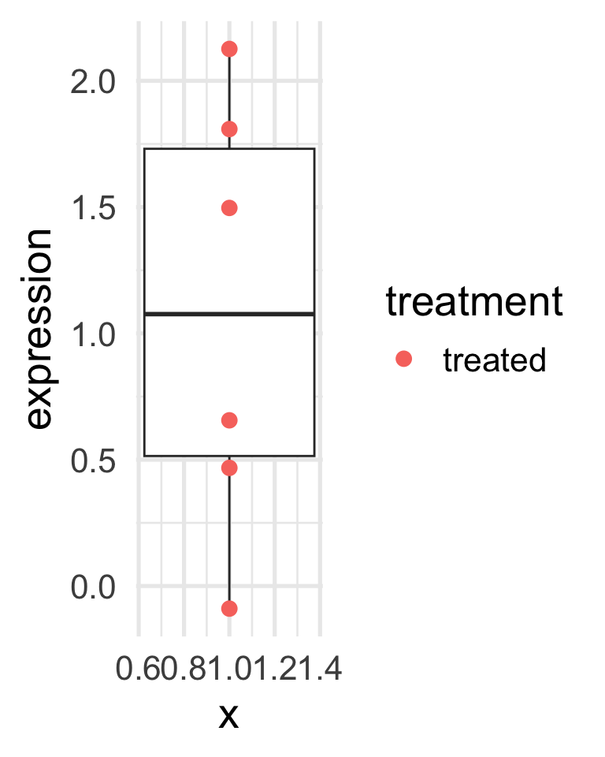
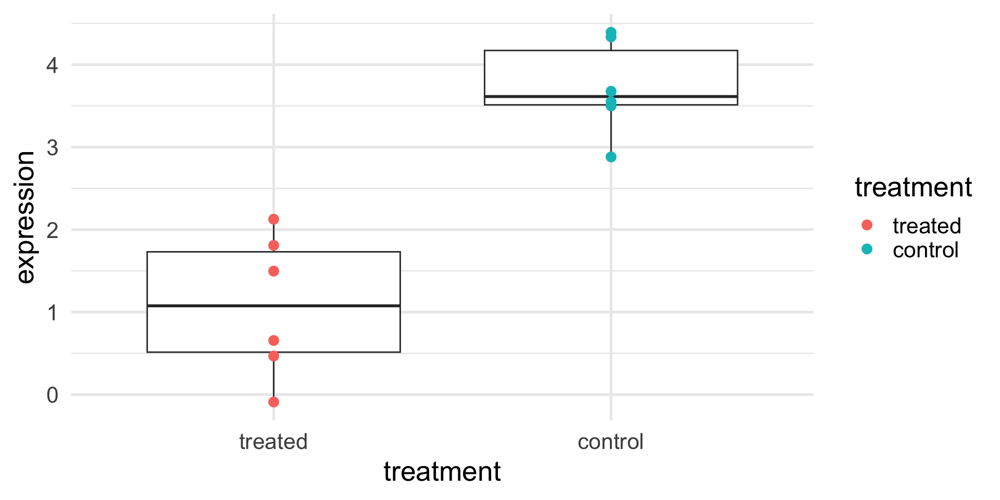
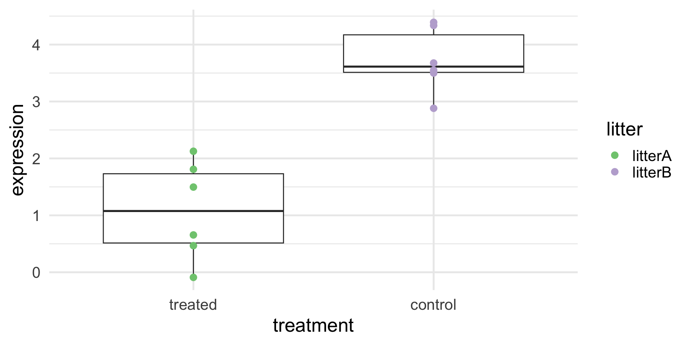
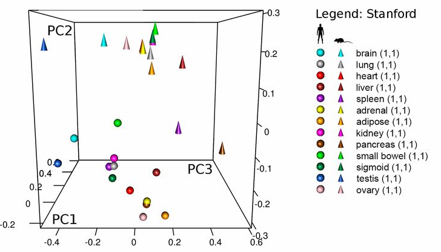
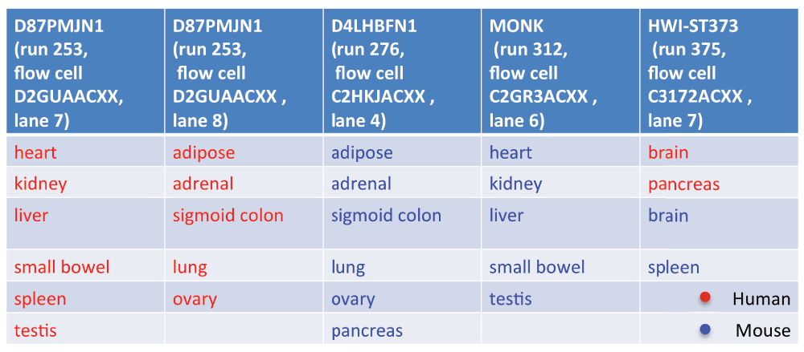
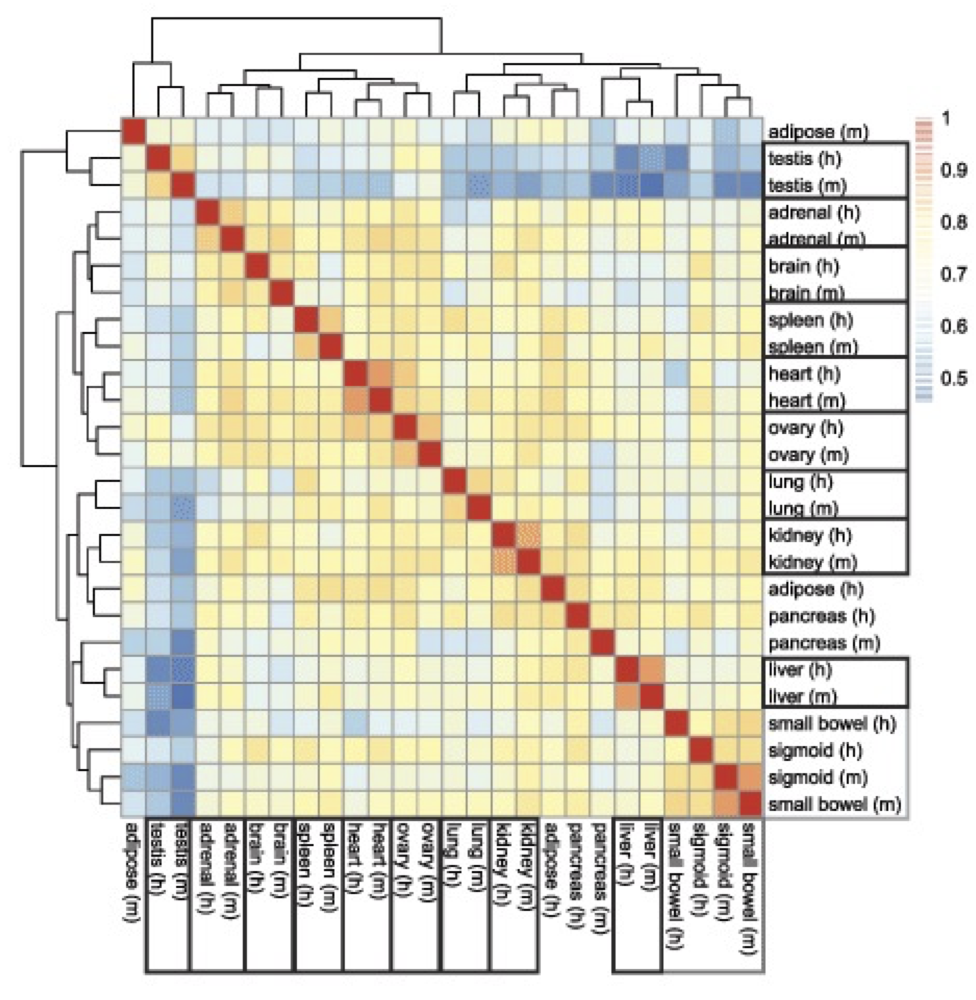
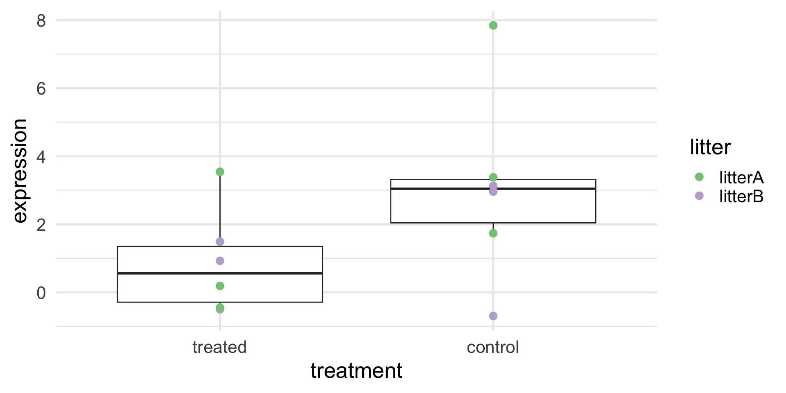
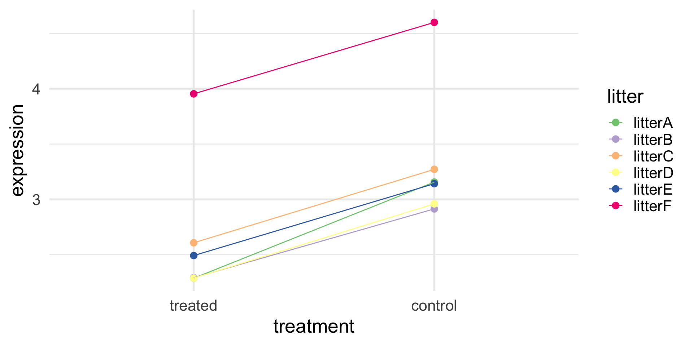
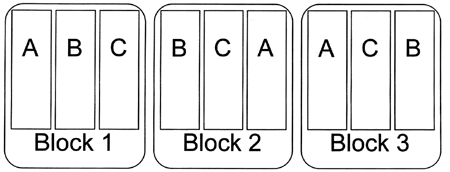
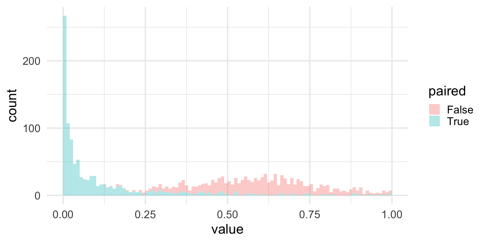

Call:
lm(formula = expression ~ treatment)
Residuals:
Min 1Q Median 3Q Max
-1.1671 -0.4688 -0.1095 0.6277 1.0485
Coefficients:
Estimate Std. Error t value Pr(>|t|)
(Intercept) 1.0776 0.2982 3.614 0.00474 **
treatmentcontrol 2.6447 0.4217 6.271 9.25e-05 ***
---
Signif. codes: 0 '***' 0.001 '**' 0.01 '*' 0.05 '.' 0.1 ' ' 1
Residual standard error: 0.7304 on 10 degrees of freedom
Multiple R-squared: 0.7973, Adjusted R-squared: 0.777
F-statistic: 39.33 on 1 and 10 DF, p-value: 9.247e-05Experimental design
Advanced Statistics and Data Analysis
Davide Risso
Introduction
Experimental design
Quote
“To consult the statistician after an experiment is finished is often merely to ask him to conduct a post mortem examination. He can perhaps say what the experiment died of.”
R.A. Fisher (1938)
What is experimental design?
Experimental design is the field of statistics dealing with how to collect data so that the results will best be able to answer the question of interest.
Generally, we want to compare/manipulate: e.g. try two different scenarios and see the effect on a certain response variable.
The term “Experiment” implies labs, test tubes, etc. but it is much broader. We refer to “experiments” whenever there is a choice by the investigator to assign one of multiple treatments to each unit in the study.
What is experimental design?
Holmes and Huber call experimental design the art of good enough.
- Experimental design rationalizes the tradeoffs imposed by having finite resources.
- Sample sizes are limited for practical, economic, and sometimes ethical reasons.
- Our measurements may be overlaid with nuisance factors over which we have limited control.
- There is little point in prescribing unrealistic ideals: we need to make pragmatic choices that are feasible.
Types of experiments
In order on how much we can control.
- Experiment (proper)
- Everyting is controlled
- Prospective, controlled studies
- E.g., clinical trials
- randomization, blinding
- ethical constraints
- Retrospective observational studies: we lack control on
- study participants’ behavior
- assignment of factors
- confounding
- Meta analysis
- Retrospective analysis of data that has already been collected
Is this statistics?
In order to design a sensible experiment, one must know how they will analyze the data.
The design of an experiment is based on statistical properties of the analysis (and data).
Understanding the analysis will lead to understanding how the data should best be collected.
In order to correctly analyze, we must understand the design.
Is this statistics?
Much of applied statistics involves more than just analysis.
Even if you are not involved in the design (or there is no design at all) experimental design can help analyze the data.
What would a well-designed experiment look like?
What can/cannot answer with this design? (Maybe nothing at all!)
Confounding
A toy example
Assume that we want to study whether a certain treatment affect a certain protein expression.
We may design an experiment in which we give the treatment to a certain number of mice, say six, and measure the protein expression.
To minimize variability, all mice come from the same litter.
What can we conclude from the results in the next slide?
A toy example
A toy example (with controls)
We need a reference point to understand if the expression is high or low.
We can measure the protein expression on another six mice (from another litter), to which we did not give the treatment.
What can we conclude from the results in the next slide?
A toy example (with controls)
A toy example (with controls)
Are you sure?
We need a reference point to understand if the expression is high or low.
We can measure the protein expression on another six mice (from another litter), to which we did not give the treatment.
What can we really conclude from the results in the next slide?
A toy example (with confounding)
A toy example (with confounding)
Call:
lm(formula = expression ~ treatment + litter, data = df)
Residuals:
Min 1Q Median 3Q Max
-1.1671 -0.4688 -0.1095 0.6277 1.0485
Coefficients: (1 not defined because of singularities)
Estimate Std. Error t value Pr(>|t|)
(Intercept) 1.0776 0.2982 3.614 0.00474 **
treatmentcontrol 2.6447 0.4217 6.271 9.25e-05 ***
litterlitterB NA NA NA NA
---
Signif. codes: 0 '***' 0.001 '**' 0.01 '*' 0.05 '.' 0.1 ' ' 1
Residual standard error: 0.7304 on 10 degrees of freedom
Multiple R-squared: 0.7973, Adjusted R-squared: 0.777
F-statistic: 39.33 on 1 and 10 DF, p-value: 9.247e-05A more realistic example
Lin et al. (2014) studied the gene expression of several tissues across mice and humans
The question they asked was whether the transcriptome is more similar for a tissue across species or for a species across tissues.
Perhaps surprisingly, the study concluded that “differences dominate similarities between the two species […] likely reflecting the fundamental physiological differences between these two organisms”.
A more realistic example
A more realistic example
Gilad & Mizrahi-Man reanalyzed the data and found that species is confounded with sequencing batch.
A more realistic example
If we adjust for the “batch effect”, we remove the species difference, but is this real?
What can we conclude?

Principles of experimental design
The steps of experimental design
Design – choices you make before collecting the data
- What measurement to make (the response)?
- What conditions to compare (the treatment)?
- What is a unit that will get a treatment (individual person? groups of people, like a hospital?)
- How many samples do I need?
- Which units get which (combination) of treatments?
Running the experiment
Analysis – how you analyze the data created from a particular design to answer the scientific question.
Back to the toy example
- What measurement to make (the response)?
- What conditions to compare (the treatment)?
- What is a unit that will get a treatment?
- How many samples do I need?
- Which units get which (combination) of treatments?
Better ways to design the experiment
Now that we know that litter may cause confounding, we have three options.
- Reduce technical variance: we use for our experiments only mice from the same litter.
- Randomization: instead of assigning all mice from one litter to each treatment, we randomize the order.
- Blocking: we take pairs of mice from several litters and give the treatment to one of the two, randomly.
What are the pros and cons of each option?
A better experiment: randomization
A better experiment: randomization
Call:
lm(formula = expression ~ treatment + litter, data = df)
Residuals:
Min 1Q Median 3Q Max
-3.0098 -1.5810 0.1103 0.9528 4.0417
Coefficients:
Estimate Std. Error t value Pr(>|t|)
(Intercept) 1.612 1.103 1.461 0.178
treatmentcontrol 2.193 1.274 1.722 0.119
litterlitterB -1.488 1.274 -1.168 0.273
Residual standard error: 2.207 on 9 degrees of freedom
Multiple R-squared: 0.3248, Adjusted R-squared: 0.1747
F-statistic: 2.164 on 2 and 9 DF, p-value: 0.1708A better experiment: blocking
A better experiment: blocking
Call:
lm(formula = expression ~ treatment + litter, data = df)
Residuals:
1 2 3 4 5 6 7 8
-0.090933 0.032581 0.011479 0.007766 0.018634 0.020473 0.090933 -0.032581
9 10 11 12
-0.011479 -0.007766 -0.018634 -0.020473
Coefficients:
Estimate Std. Error t value Pr(>|t|)
(Intercept) 2.37867 0.04900 48.547 7.01e-08 ***
treatmentcontrol 0.68681 0.03704 18.543 8.39e-06 ***
litterlitterB -0.11876 0.06415 -1.851 0.1234
litterlitterC 0.21743 0.06415 3.389 0.0195 *
litterlitterD -0.09813 0.06415 -1.530 0.1867
litterlitterE 0.09493 0.06415 1.480 0.1990
litterlitterF 1.55474 0.06415 24.235 2.23e-06 ***
---
Signif. codes: 0 '***' 0.001 '**' 0.01 '*' 0.05 '.' 0.1 ' ' 1
Residual standard error: 0.06415 on 5 degrees of freedom
Multiple R-squared: 0.9963, Adjusted R-squared: 0.9918
F-statistic: 222.8 on 6 and 5 DF, p-value: 6.639e-06A better experiment: blocking
If we don’t include litter, we lose power, but the treatment effect is correctly estimated.
Call:
lm(formula = expression ~ treatment, data = df)
Residuals:
Min 1Q Median 3Q Max
-0.42637 -0.36554 -0.19142 -0.06334 1.30017
Coefficients:
Estimate Std. Error t value Pr(>|t|)
(Intercept) 2.6537 0.2616 10.143 1.4e-06 ***
treatmentcontrol 0.6868 0.3700 1.856 0.0931 .
---
Signif. codes: 0 '***' 0.001 '**' 0.01 '*' 0.05 '.' 0.1 ' ' 1
Residual standard error: 0.6409 on 10 degrees of freedom
Multiple R-squared: 0.2562, Adjusted R-squared: 0.1819
F-statistic: 3.445 on 1 and 10 DF, p-value: 0.0931Side note
This is exactly the difference between a two-sample and a paired t-test!
Welch Two Sample t-test
data: df_wide$treated and df_wide$control
t = -1.8562, df = 9.9906, p-value = 0.09313
alternative hypothesis: true difference in means is not equal to 0
95 percent confidence interval:
-1.511352 0.137741
sample estimates:
mean of x mean of y
2.653702 3.340508
Paired t-test
data: df_wide$treated and df_wide$control
t = -18.543, df = 5, p-value = 8.394e-06
alternative hypothesis: true mean difference is not equal to 0
95 percent confidence interval:
-0.7820154 -0.5915956
sample estimates:
mean difference
-0.6868055 What have we done?
An experiment like this is called randomized block design.
The variable litter is the blocking variable.
Each treatment is applied within each block.
Randomization and blocking are the two main devices of experimental design.
Randomization vs Blocking
Randomization vs Blocking
Quote
“Block what you can, randomize what you cannot.”
George Box (1978)
In a Randomized Complete Block Design the experimental units are blocks sampled at random from the population.
Treatments are then assigned at random to the observational units within each block.
Randomized Complete Block Designs
Each treatment is applied to each block exactly once.
Paired designs are a special case with two treatments.
Completely Randomized Design
Sometimes it is not possible or practicle to block, e.g.,
- we do not know the nuisance factor in advance
- we cannot assign a treatment to a block more than once
In such cases, we can use randomization, i.e., assign the treatment randomly to each experimental unit.
Randomization decreases (unconscious) bias and helps with unknown nuisance factors.
Blocking leads to more power
We have seen in the mouse toy example that blocking for the litter effect led to a smaller p-value.
In general, blocking leads to more power than randomization.
We can simulate some data to empirically show this effect.
Simulation study
set.seed(1547)
B <- 1000
alpha <- 0.05
n <- 15
effect <- 0.2
pvals <- replicate(B, {
litters <- rnorm(n, 0, 1)
noiset <- rnorm(n, 0, 0.25)
noisec <- rnorm(n, 0, 0.25)
treated <- litters + effect + noiset
controls <- litters + noisec
c(t.test(treated, controls, paired=FALSE)$p.value,
t.test(treated, controls, paired=TRUE)$p.value)
})
rowMeans(pvals <= alpha)[1] 0.000 0.557Simulation study
Replication
How many replicates do I need?
The right question to ask
How many replicates do I need to detect this effect given that the data exhibit this variability?
In other words, the power to detect a difference depends on the effect size and the variance, in addition to sample size.
Intuitively, we need few replicates when comparing well-controlled cell lines, many more when performing an observational studies in a heterogeneous human population.
Power calculations
Sample size calculations
Sample size calculation
It may not be obvious what are the expected effect size and variability.
In such cases, pilot experiments may be useful.
Technical vs. biological replicates
Not all replicates are equal!

Experimental vs. observational units
Experimental units are the smallest entities that can be independently assigned to a treatment (e.g., animal, litter, …)
Observational units are the units at which measurements are made.
Think of single-cell molecular assays: we measure e.g. gene expression at the individual cell level, but we are typically interested in treatments at the animal or tissue level.
Technical vs. biological replicates
Biological replication is required to make a general statement of the effect of a treatment
You can’t draw a conclusion about the effect of a compound on people in general by observing the effect in one person.
Only replication of experimental units is true replication (independent error terms).
Pseudo replication
Only experimental units are independent.
- E.g., cells from the same mouse are more correlated to each other than to cells from a different mouse.
A sample of independent observations is more informative than one of dependent ones.
Example: ask the political opinion of \(n\) people randomly picked from \(n\) independent locations vs. \(3\) randomly picked locations and \(n/3\) people randomly picked at each location.
Nested designs
Although less ideal than Randomized Complete Block Designs, nested (or split-plot) designs are common and describe a situation similar to what we just described.
Nested designs may be more convenient, for instance in education we are interested in measuring effects on children, but children are taught in classrooms, hence we often cannot apply treatments at the child level, but at the school or teacher level.
Nested design: an example
An experiment compares the ability of two technologies to detect diabetes in dogs. Ten dogs are randomly divided into two groups: in one group they induce diabetes.
What kind of design can we use?
Nested design: an example
Completely Randomized: 2 technologies \(\times\) diabetic or not, hence 4 treatment combinations: randomly assign a treatment combination to a dog. Don’t we want to block for the dog effect (individual effects are important!)?
Complete Block: for each dog, randomly assign each treatment combinations. Ideal but not possible, a dog is either diabetic or not.
Nested Design: each dog gets randomly assign diabetes or not, but then measure each dog with both technology.
Designs are about constraints
We have a nested design because we cannot perform a complete block design.
The consequence is that we now have pseudo-replication: we measure each dog twice, but the treatment is at the dog level.
We will see that random effect and mixed effect models are one way to deal with pseudo-replication.
One particular case of pseudo-replication is longitudinal data, in which each experimental unit is measured across time.